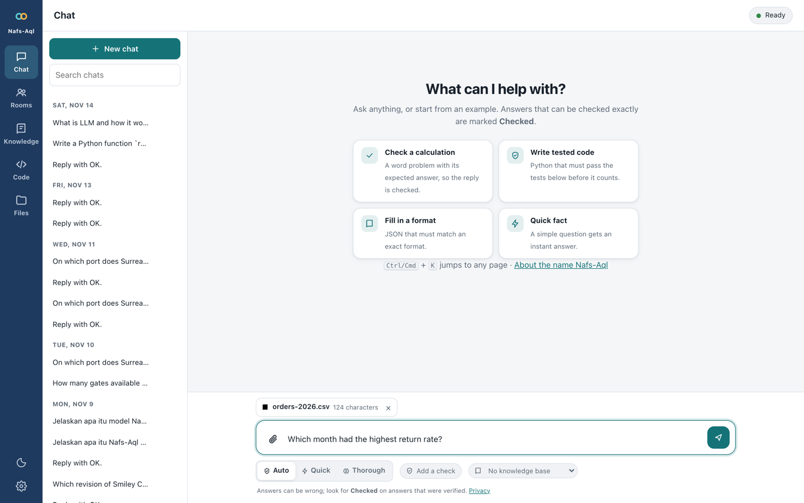
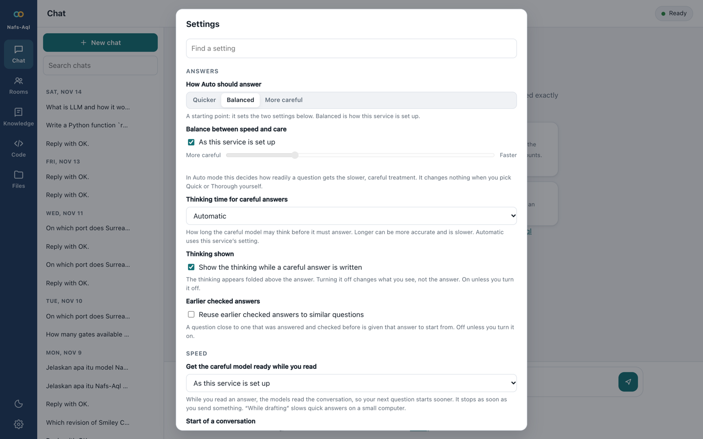

Smiley Core (default)
The project's own Rust CPU engine, started by make up. The quick model is served on port 8201, the reasoning model on 8202, the app on 8080.
Three commands to a working assistant on your own machine, and a map of the documentation in the repository.
huggingface_hub Python package.make models fetches the two chat models. Search by meaning in your documents also needs the embedding model: scripts/fetch_models.sh embed (about 1.8 GB). Until it is there, documents are searched by their words.nafs-gateway --check reports whether the sandbox works.git clone https://github.com/rismanmattotorang/nafsaql.git && cd nafsaqlmake modelsQwen3-1.7B and Qwen3-4B-Thinking, as 4-bit GGUF files.
make upThis builds the Rust gateway and the Smiley Core engine, starts both model servers, and starts the gateway. Open http://127.0.0.1:8080.
make downStops everything.
assert per line.Press Ctrl/Cmd + K on any page to jump anywhere. The user guide covers every page.


The project's own Rust CPU engine, started by make up. The quick model is served on port 8201, the reasoning model on 8202, the app on 8080.
make up-llama starts llama-server and switches the gateway to it; make down-llama switches back. It serves several people at once better. It needs a CPU build of llama.cpp in third_party/.
A CPU image behind the same gateway. The 1.7B model alone needs an 11 to 12 GiB Docker VM, and the gateway-side check was not completed on the reference host. See the serving notes.
The deploy/ folder has recipes for docker compose, systemd, launchd, TLS in front of the gateway with Caddy or nginx, Prometheus alerts and a Grafana dashboard. The operator runbook walks through them.
The documentation is Markdown and PDF on GitHub. These links open it there.
For language-model readers there is a plain-text summary of this site with links: llms.txt.
[recall] enabled = false in the configuration turns it off. Private chats and rooms are never remembered.Run make test, keep cargo fmt and cargo clippy -D warnings clean, back a performance claim with an interleaved comparison, and record a judgement call in ASSUMPTIONS.md.
Nafs-Aql is released under the Apache License 2.0. Qwen3 model weights, llama.cpp, vLLM and the evaluation datasets keep their own licences; see NOTICE.